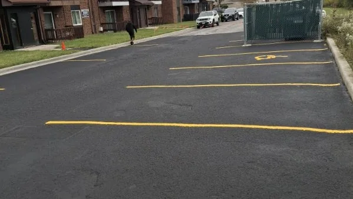
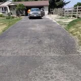
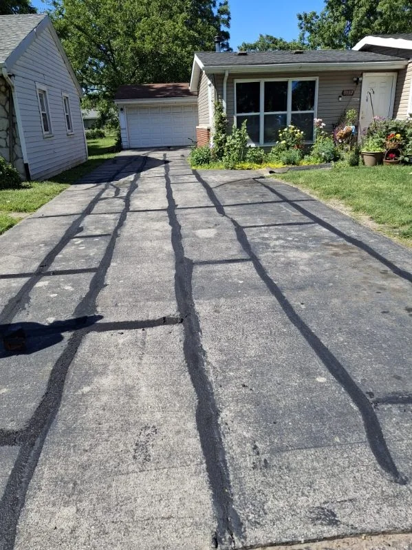
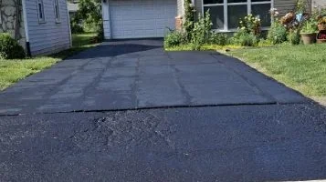
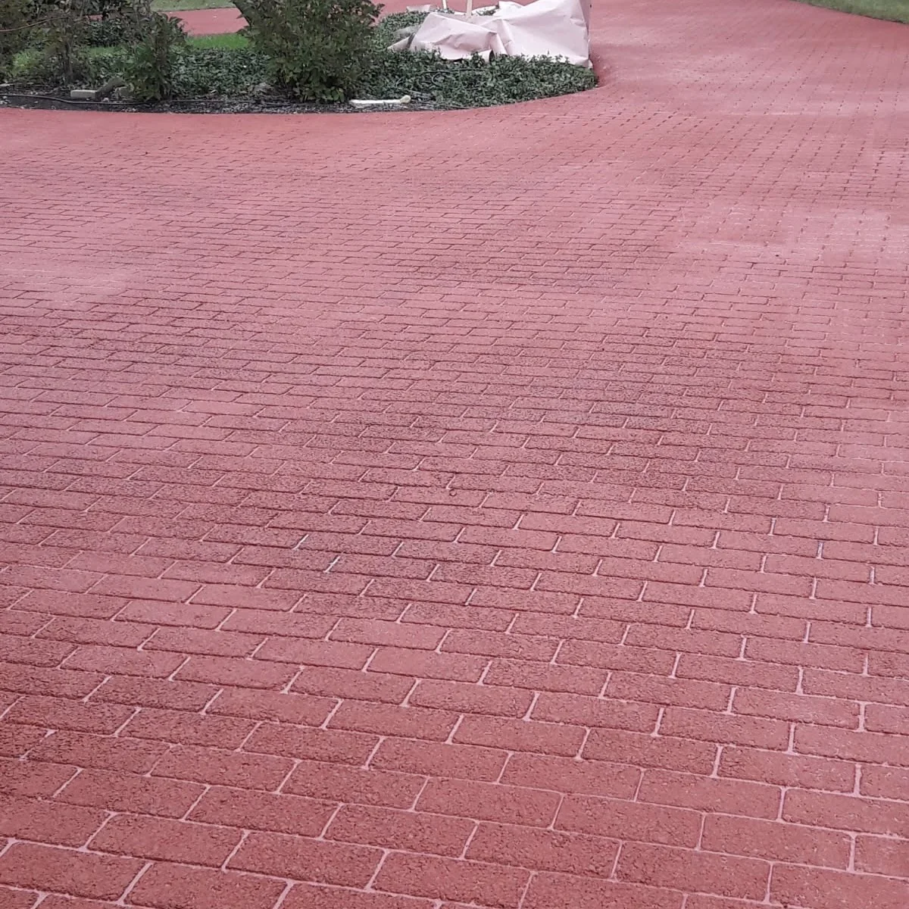

Commercial Lot
Seal Coating & Fresh Striping
Clean black surface with high-contrast parking lines and a professional curb appeal upgrade.
Our Work
A curated look at residential and commercial work from Zavaleta Brothers LLC. For the newest posts and additional job photos, visit the business on Facebook.
Clean black surface with high-contrast parking lines and a professional curb appeal upgrade.

Fresh striping improves visibility and makes the lot easier for visitors and tenants to use.

Straight, clean markings for a sharper and more organized property entrance.

A deep black finish that improves curb appeal and protects the pavement surface.

Neat edges and an even finish for a driveway that looks ready for the season.

A practical residential asphalt refresh with a clean, uniform appearance.

Sealing cracks helps limit water intrusion before it can lead to larger asphalt damage.

Crack sealing paired with surface work helps extend the life of existing pavement.

Decorative texture work adds a more finished look for residential pavement areas.

A bold decorative finish for areas where the surface should stand out.
Need Pricing?
Ask about seal coating, asphalt repair, crack sealing, paving, or line striping for your driveway or parking lot.